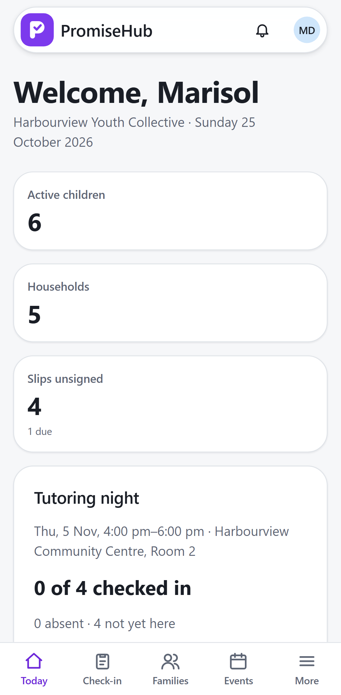
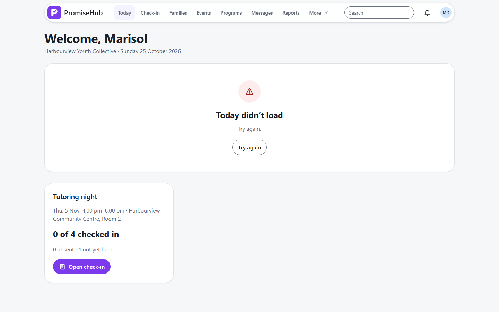

PromiseHub · Video 33
Monitor today's work
One page that answers: what needs me?
One page that answers: what needs me?
Sessions, waiting work, slips and coming up.
Counts and coming up; nothing else.


| Case | Answer |
|---|---|
| Slips or Incidents off | No card, no task |
| Youth worker | No review work |
| Another organization | Its own counts only |
| Roster off | 404 |
Next: search records